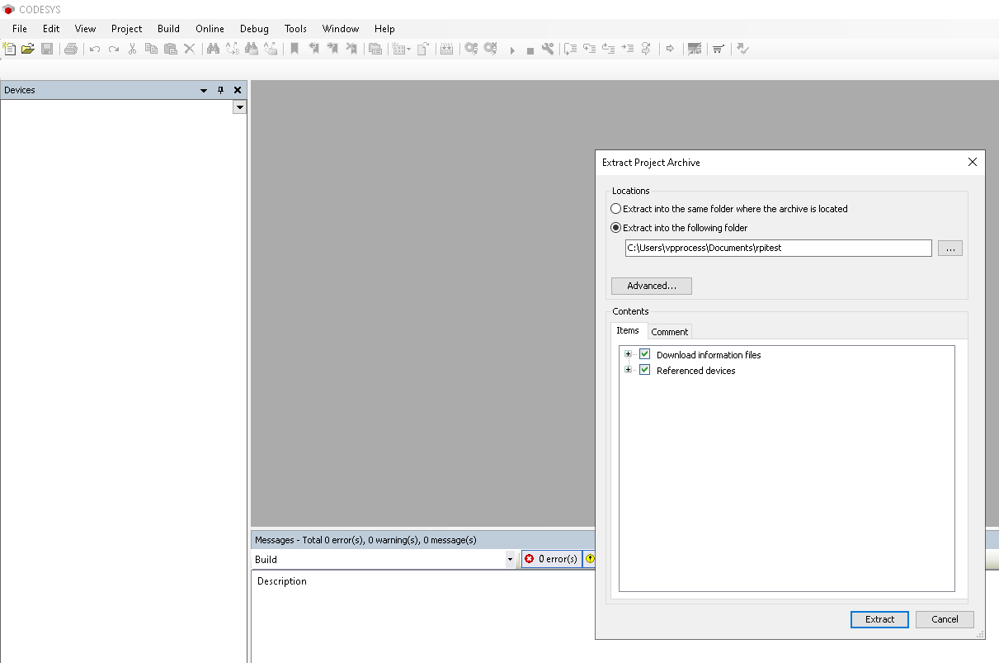

Since CODESYS does not have native support for the WL-MIO hardware a Modbus TCP Gateway will be used. CODESYS applications will interact with this gateway via Modbus to read and write I/O points. To install the gateway see the Application Note WL-MIO-AN-30200
1. CODESYS IDE with Raspberry Pi package installed on a system with network access to the Raspberry Pi.
2. WL-MIO system with a VPE-6040 Analog Input Module with ID 2 and a VPE-6030 Relay Output Module with ID 3.
3. Modbus TCP gateway installed and running.
Steps 2-5 can be skipped if your Raspberry Pi has the CODESYS runtime already installed and running.
Start the CODESYS IDE.
Open “Tools” menu and click “Update Raspberry Pi”.
Configure the window on the left as shown below and then click “Install” under “CODESYS Runtime Package”.
Click “Start” under “Runtime”.
Download the project rpitest.projectarchive somewhere.
This is a simple project that reads an analog input value and turns on a relay if the input threshold value is crossed.
Select “File” → “Project Archive” → “Extract Archive”.
Extract the project.
When the project is opened, double-click the “Device” entry in the tree on the left. Then select “Communication Settings” from the center window. Then enter the IP address of your Raspberry Pi in the right-most dropdown and press enter. (Highlighted in the screenshot)
You should see something like the below screenshot.
Now go to “Online” → “Login” to connect the IDE to the Raspberry Pi. If CODESYS asks you to update the application, click yes.
If the application is stopped it can be started by right-clicking on “Application” and clicking “Start”.
Once the application is running you can apply more than 2.5V to the first channel of the VPE-6040 module with ID 2 to cause a relay to turn on. The code for this can be seen in the PLC_PRG file.
Back to Top